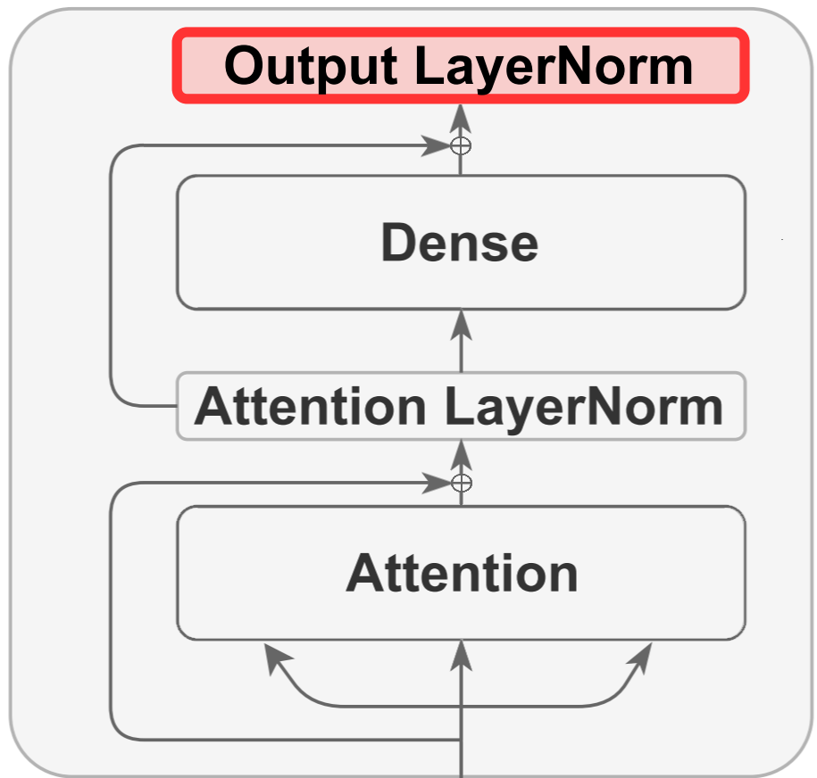

PharmBERT: An LLM for pharmaceutical texts
üìÑ Paper |
üñº Poster |
üñ• Presentation |
üíª Code |
üì¶ Model (cased) |
üì¶ Model (uncased)
Drug labels aren’t like ordinary text. They’re packed with highly specialized language, strict regulatory phrasing, and complex medical terminology. This makes them challenging for generic large language models (LLMs), which lack the domain knowledge needed to interpret pharmaceutical text with accuracy and reliability.
That’s where PharmBERT comes in. Built specifically for the U.S. Food and Drug Administration (FDA), PharmBERT is a first-of-its-kind, purpose-built model designed to understand the unique world of drug labels. Unlike general-purpose LLMs, PharmBERT has been trained on a vast range of pharmaceutical texts, giving it the expertise to decode complex compound names, regulatory language, and medical terminology with unmatched precision.

PharmBERT bridges the gap between powerful language processing and the strict demands of the pharmaceutical industry. The result: more accurate insights, greater reliability, and contextually relevant analysis that general models simply can’t match.
With PharmBERT, pharmaceutical companies, healthcare professionals, and regulators gain a specialized tool that transforms drug-label text into actionable knowledge—delivering clarity, confidence, and compliance at every step.
Amino Acid k-mer Features for Antimicrobial Resistance Prediction
üìÑ Paper |
üñº Poster
Microbes can adapt over time, developing resistance to antibiotics—a phenomenon known as antimicrobial resistance (AMR). Once this resistance emerges, treating infections becomes much more difficult, often requiring stronger or alternative antibiotics, many of which may carry greater risks. Misuse and overuse of antibiotics have accelerated this process, putting constant evolutionary pressure on microbes and driving the rise of AMR. Today, this issue is widely regarded as one of the most serious public-health threats, with the potential to trigger crises comparable to pandemics if effective treatments are unavailable.
The aim of this project was to design and test machine learning approaches that leverage bacterial genome sequences in two ways: first, to estimate the minimum antibiotic dosage needed to combat an infection; and second, to pinpoint mutations or genes that contribute to resistance. I introduced a new feature-extraction method—counting amino-acid k-mers—that enables machine-learning models to recognize recurring patterns in amino acid sequences within bacterial genes. I compared the proposed method to the existing methods, such as counting nucleotide (NT) k-mers, gene searching, and single-nucleotide polymorphism (SNP) calling.

My proposed approach not only matches or surpasses the accuracy of current techniques for predicting dosage but also offers researchers deeper insight into how resistance arises at the molecular level. For example, it reveals that although the truncated version of the tetracycline resistance gene tet(D) is listed as a resistance-conferring gene in the AMR database, Klebsiella pneumoniae strains carrying this version are actually susceptible to antibiotics. This discovery changes our understanding of the function of the tet(D) gene.
Two-stage fine-tuning for learning class-imbalanced data
üìÑ Paper |
üñ• Presentation |
üíª Code
In practical classification scenarios, it's common to encounter an imbalanced or long-tailed distribution of classes. This situation arises when certain classes within the dataset, known as minority classes, are represented by a relatively small number of samples, while others, referred to as majority classes, are characterized by a significantly larger number of samples. This non-uniform distribution of samples among classes presents a challenge to a wide array of machine learning algorithms. This issue is further exacerbated if the selected performance metric values all classes equally, irrespective of their frequency in the dataset, for reasons such as fairness and inclusivity or because of an intrinsic interest in the minority class.
To cope with these challenges, a simple modification of standard fine-tuning is employed: Two-stage fine-tuning. In Stage 1, the final layer of the pretrained model is pre-finetuned. The pre-finetuning can be done either by training the last layer with class-balanced augmented data, generated using ChatGPT, or with a class-balanced reweighting method used with the original data. In Stage 2, the standard fine-tuning is performed.

This modification has several benefits:
- It leverages pretrained representations by only finetuning a small portion of the model parameters while keeping the rest untouched
- It allows the model to learn an initial representation of the specific task
- It protects the learning of tail classes from being at a disadvantage during the model updating
The experimental results show that the proposed two-stage fine-tuning outperforms vanilla fine-tuning and state-of-the-art methods on different datasets.
LayerNorm: A key component in parameter-efficient fine-tuning
üìÑ Paper
üñ• Presentation |
Transformer-based models achieve strong performance across many NLP tasks. However, due to their large number of parameters, these models are computationally expensive to fine-tune for downstream tasks. This cost grows as the number of tasks increases. Furthermore, the combination of many parameters and limited labeled data for a given task can lead to overfitting and poor generalization on out-of-distribution data. A popular approach to mitigate this issue is to fine-tune only a small subset of the model parameters rather than performing full fine-tuning.
To find a computationally efficient find tuning method, I first examine how different components of BERT change during full fine-tuning and identify LayerNorm as a key component. I show that LayerNorm has the highest Fisher information among all components of BERT. This is consistent with findings from other studies, which show that—unlike other components—the performance of BERT-family models degrades significantly when LayerNorm is disabled. This further underscores the critical role of this component. Based on these observations, I perform parameter-efficient fine-tuning by training only the LayerNorm component. My results demonstrate that fine-tuning only LayerNorm achieves comparable performance to another state-of-the-art parameter-efficient tuning (bias-only tuning), while requiring just one-fifth the number of parameters. Moreover, I show that strong performance can still be obtained when only a portion of LayerNorm is trained. Importantly, this portion can be selected based on information from the target downstream task or even from other tasks, without sacrificing performance. Achieving strong results with subsets of LayerNorm chosen from unrelated tasks highlights that these subsets can be optimized in a problem-agnostic manner.

Mathematical analysis and improvement of IS-LDPC codes
üìÑ Paper
Peak-to-Average Power Ratio (PAPR) is a major shortcoming of Orthogonal Frequency Division Multiplexing (OFDM) systems. One promising solution to this issue is the use of Invertible-Subset Low-Density Parity-Check (IS-LDPC) codes. Although IS-LDPC codes are particularly effective at controlling PAPR with low search complexity, their error-control performance degrades as the number of invertible subsets increases.
To investigate the reasons for this performance degradation, I conducted a mathematical analysis of the code construction and proved four theorems that determine the probability of key events in the construction of such codes, while also establishing bounds on the decisions that influence their performance. Based on these theorems, I proposed a heuristic search method designed to enhance the error-control performance of IS-LDPC codes, while maintaining their favorable PAPR control characteristics and low search complexity. Computer simulations show that the proposed method decreases the bit error rate (BER) and frame error rate (FER) across different configurations of IS-LDPC codes.